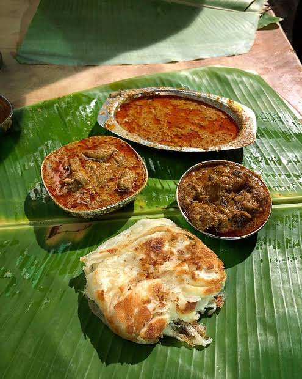

DISTRICT-WIDE DIRECTORY & INTERACTIVE MAP
Browse places by taluk, check real distances, and track them directly on the interactive map.
CONTEMPORARY BREWS & DESSERT HANGOUTS
Charming coffee shops, artisanal dessert parlors, study-friendly spaces, and late-night waffle spots in Madurai.
CENTRES FOR KNOWLEDGE & ENTERTAINMENT
Discover the landmark 3.3-lakh sq ft public library, leading shopping malls, lush corporation parks, and entertainment complexes.

EAT LIKE A LOCAL
From smoky roadside kothu parotta and flaky bun parotta to chilled Jigarthanda and Ayira Meen Kuzhambu, Madurai's best stories are served on a banana leaf.
Explore local food →BEYOND THE PLATE
Ancient rock-cut shrines, royal Nayak halls, Jallikattu arenas, and museums worth slowing down for.
DISTRICT NEIGHBOURHOODS
From the bustling Masi streets around Meenakshi Temple to the night food of Simmakkal and the ancient excavations of Keeladi.
Meenakshi Temple, historic streets, jasmine flower markets, and ancient core.
Traditional food + markets; Kari dosa, hot mutton soup, parotta, and night stalls.
Temple streets + shopping + food; Madurai Sungudi sarees, brassware, and tiffin.
Teppakulam + evening food; 16-acre temple tank, float festival, and lakeside strolls.
Modern restaurants + shopping; Zaitoon Middle Eastern grills, cafes, and upscale avenues.
Restaurants + hotels; Madurai Kitchen, family restaurants, and commercial centres.
Messes + restaurants; Famous Chandran Mess, kola urundai, and biryani houses.
Integrated bus terminal + Central wholesale flower and produce market.
Murugan Temple + heritage; First Arupadaiveedu, rock-cut shrines, and Jain cave beds.
Lord Kallazhagar Temple + forested hills + Pazhamudircholai Murugan shrine.
CULTURAL CELEBRATIONS
Experience the thunderous roar of Jallikattu in Alanganallur, the celestial Meenakshi Thirukalyanam wedding, and Lord Alagar entering the Vaigai river on a golden horse.
Explore festivals →EVIDENCE-BASED CHRONICLES
Actor Soori's Amman Restaurant, Sivakarthikeyan's verified restaurant inaugurations, Vishnu Vishal's visits, and historical film legends documented at traditional messes.
View celebrity spots →REST WELL
Heritage villas, Bawa-designed resorts, and comfortable pilgrim lodges across Madurai district.
COMMUNITY DESK & VISITOR ASSISTANCE
Planning your visit, spot an updated timing or entry fee, or have a hidden food spot to recommend? Connect with our Madurai local community desk.
24/7 Multi-language Tourist Assistance
Darshan inquiries & temple seva passes
Madurai City Tourist Police Patrol
Know an authentic banana-leaf mess, updated entry fee, or have feedback? Drop us a message.
Official help counters operated for travelers arriving in Madurai.